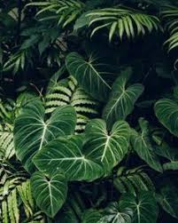

Ornamental Plants
Ornamental plants are plants that are grown for decorative purposes in gardens and landscape design projects, as houseplants, cut flowers and specimen display. The cultivation of ornamental plants is called floriculture, which forms a major branch of horticulture.

OutDoor Plant
Popular plants for outdoor gardens include ornamental trees and shrubs, vines, vegetables and herbs, perennial flowers (flowers that return for three or more years) and annual flowers